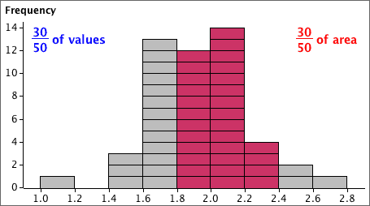

Probabilities from a histogram
In the histogram of any finite sample or population, the area above any class is the proportion of values in the class.

Probabilities from a probability density function
Since a probability density function (pdf) is a type of histogram, it satisfies the same property.
The probability that a sampled value is within two values, P(a < X < b), equals the area under the pdf.
This is the key to interpreting pdfs.